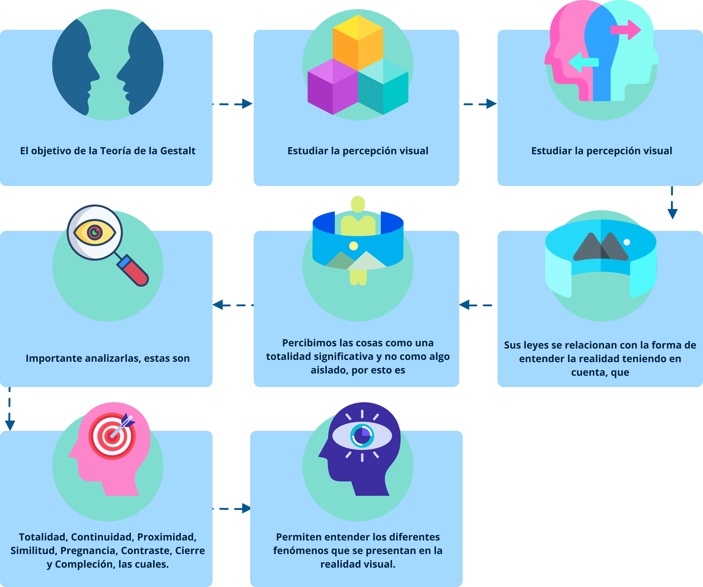
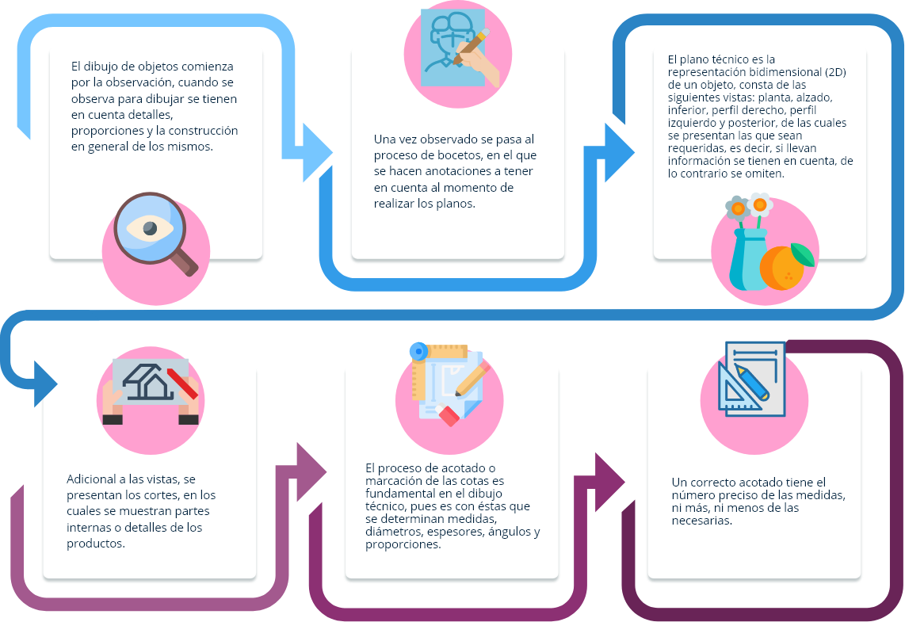

1. Teoría de la Forma
Para el desarrollo de un producto de moda, es fundamental el conocimiento de “Teoría de la forma”, para comprender, conceptualizar y aplicar las diferentes temáticas relacionadas con el cuerpo humano, para transformarlo y modificar su apariencia, estructura y estética.

(…) la fabricación de la primera envolvencia corporal se concibe, desde sus orígenes como un proyecto arquitectónico desde la epidermis, se transfiere a la piel artificial los anhelos de metamorfosis implícitos en el ser humano, que en un proceso de mutación de forma, textura y color en el lienzo térmico se transforma modificando su identidad.
(…) la vestimenta, como primera envolvente artificial es desde su invención, la materialización de un proyecto de carácter arquitectónico que en su proceso de diseño incorpora los conceptos de dimensión y escala; función y forma; estructura, material y construcción; técnica e instrumentación.
(Alcoceba, 2015, p. 19 y 20)
Además de proteger el cuerpo ante las inclemencias climáticas y de las hostilidades del ambiente que nos rodea, el vestido nos distingue. Se presenta como símbolo de pertenencia a cierto grupo étnico o a cierto estatus social. Paradójicamente, el vestido nos individualiza a la vez que nos hace desaparecer frente a nuestros semejantes.
(Avilés, 2016, p. 3)
En el mundo visual la forma es percibida e interpretada por los sentidos, todo se estructura alrededor de como sean percibidas las sensaciones. El objetivo fundamental de esta temática es generar una invitación a explorar nuevas maneras de interpretar y llevar a un estado visual las sensaciones generadas en el cerebro como producto de los estímulos externos, teorizar y recoger conceptos acerca de las formas y plantear el concepto de “Forma” a partir del entorno natural, abstracto e imaginario de acuerdo a las experiencias previas del individuo.
El oído, el gusto, el tacto, la visión y el olfato son el principal medio de construcción de la forma.
1.1 La forma y sus significados, la psicología de la Gestalt
La forma es todo lo que el ojo puede ver o interpretar y se asocia a diferentes conceptos, partiendo del punto, que es la mínima expresión de la representación espacial, es el principio o es el final.
(…) el todo es siempre más que la suma de sus partes”. Esta frase revela exactamente los principios de la teoría de esta corriente: es decir, descubrir porque el cerebro humano tiende a interpretar un conjunto de elementos diferentes como un único mensaje, y como nuestra mente agrupa las informaciones que recibimos en categorías mentales que nosotros mismos hemos establecido. En el ámbito de las artes gráficas, este estudio de la percepción es fundamental a la hora de analizar como el ojo humano lee un determinado esquema, como distingue las formas y los elementos que lo componen y la unidad del mensaje y del significado.
(Lorella, 2016)
La aplicación de estas leyes, es la que da coherencia y armonía al momento de realizar una propuesta de vestuario con un sentido propio. En el álbum que encuentra a continuación podrá conocer algunos ejemplares que dan cuenta de este contexto temático.
En el material complementario encuentra el video “La teoría de Gestalt” y el blog “¿Qué es la teoría de la Gestalt” que le ayudarán a construir un panorama más amplio de este tema.
1.2 Semiótica, semántica, simbolización de las formas y volúmenes
Con la semiótica y semántica se interpretan los signos no verbales y verbales, su base es filosófica, psicológica y sociológica, descifrando los gustos, preferencias y actitudes de las personas o grupos sociales con respecto al entorno; permiten analizar y entender cómo se percibe el mundo desde diferentes miradas sociales, analizando la transformación física, mental y comportamental de las personas, asumiéndose como parte integral de una cultura que armoniza con sus prácticas sociales.
Lo anterior, lleva a entender que cada cuerpo es diferente, aunque conserve una misma estructura y que el vestuario es el encargado de transformarlo, la selección de este puede favorecer o desfavorecer la apariencia estética, existen múltiples opciones, la decisión final le pertenece a cada individuo, quien visualiza, vive y siente el mundo como lo percibe.
Es tarea del profesional de la moda, utilizar las herramientas, que le dan múltiples opciones para transformar la forma del cuerpo por medio del vestuario, teniendo siempre presente que los excesos son perjudiciales y es el control (o límite), la clave para:

Engrosar o adelgazar.
Estirar o recoger.
Aparecer o desaparecer.
Resaltar u ocultar.
Mejorar o empeorar líneas.
Moderar o exagerar formas.
Controlar o descontrolar.

De esta manera es como se logra obtener volúmenes y diferentes simbolizaciones de la forma.
Un aspecto relevante de la semiótica, es el manejo, aplicación y control del color, este representa uno de los elementos más poderosos para captar la atención y producir reacciones emocionales en el receptor.
Analice un poco más a fondo esta temática revisando el siguiente documento:
1.3 Formas geométricas, formas naturales
La naturaleza es la especialista en generar formas diversas, que interpretadas son una herramienta especial para la transformación del vestuario.
Toda representación toma forma cuando el punto se repite, genera movimiento y una dirección creando figuras reconocidas, como, por ejemplo, el circulo que es la forma perfecta y produce sensación de suavidad, armonía, ternura, fragilidad y movimiento; seguido del ovalo que se relaciona con la delicadeza, tranquilidad, suavidad y femineidad. Las formas circulares y ovales tienden a transmitir sensaciones positivas.
Las formas anguladas como el cuadrado, que es una representación estática y estable se asocia a ideas de estabilidad, permanencia, torpeza, honestidad, rectitud, esmero, rigidez, seriedad y equilibrio.
Las líneas rectas y precisas también transmiten un sentimiento de fuerza, profesionalismo y eficiencia, como la línea vertical que sugiere equilibrio, fuerza, dignidad, nacimiento, espiritualidad, ascenso, elevación y vida; la horizontal genera estabilidad, enfatiza y sugiere reposo, pasividad, estabilidad y muerte. Las líneas ascendentes sugieren decisión juventud y salida, las perpendiculares sugieren apoyo y firmeza; formas anguladas sugieren elevación y misticismo, las quebradas peligro, energía, nerviosismo y conflicto; las curvas de movimiento ondulante son femeninas, maternales y sensuales; la espiral indica movimiento continuo y evolución, cambio, creatividad originalidad y rompe con lo establecido, también se les relaciona con la tecnología y el deporte, los trazos delgados y suaves evocan la fragilidad y delicadeza, así como la sencillez de la elegancia, los gruesos generan la sensación de solidez y mayor peso.
El triángulo equilátero con la punta hacia arriba evoca grandeza, ascenso y misticismo, con la punta hacia abajo sugiere depresión y descanso; se asocia con el poder, ciencia, religión y justicia, se le relaciona con la acción a la amenaza, al conflicto, a la tensión, con la masculinidad;
1.4 Las formas en el diseño de vestuario
La configuración de cada persona es diferente, depende de su constitución física, edad, género, procedencia, hábitos alimenticios, costumbres, clima, entre otros, que definen su estructura ósea y musculatura; es decir, su forma corporal. Se pueden encontrar personas muy voluminosas o muy delgadas, con extremidades cortas o largas, con mucho o poco volumen en cadera, cintura, torso, vientre, hombros, personas erguidas o enjutos.
Cuando se va a construir el vestuario, lo primero que se debe tener en cuenta es un análisis antropométrico y determinar las características propias de la persona, que van desde los pies hasta la cabeza, teniendo en cuenta que cada individuo es único. Las grandes diferencias se encuentran en: estatura, talle, contorno de hombro, contorno de cintura, contorno de cadera, contorno de muslo, contorno de brazos, perfil de busto, perfil del abdomen y perfil del derriere.
Dependiendo de las características físicas, los resultados que se buscan al elaborar el vestuario, se logran a través de efectos de confección y patronaje que adelgacen, ensanchen, equilibren, reduzcan, acentúen, destaquen y simulen o efectos aerodinámicos que favorezcan la apariencia estética de las personas. Además, la utilización de accesorios, complementos, material textil, texturas, procesos, acabados y colores también ayudan a cambiar la apariencia estética, teniendo siempre presente la funcionalidad.
1.5 Exploración de la forma
2. Diseño y planos técnicos
El dibujo técnico es la rama de representación que se emplea en la industria para representar los objetos a realizar. Su diferencia con la ilustración, es que el dibujo técnico es normalizado o estandarizado internacionalmente, ya que usa medidas precisas (llamadas cotas) que orientan la fabricación de los productos.
En el diseño de modas se emplea para hacer los planos técnicos (geometrales) tanto de las prendas como de los insumos y accesorios a emplear.
2.1 Dibujo técnico: escuadra ángulos y líneas paralelas
El dibujo como medio de expresión, desempeña un papel de primer orden en las actividades humanas, puesto que antes de que se cree el proyecto, cualquiera que sea, es necesario diseñarlo con sus características e indicaciones en un dibujo. El dibujo técnico es una rama del dibujo, que se emplea en la industria, para representar objetos o ideas técnicas de carácter práctico, por medio de líneas, símbolos y convenciones se otorga información útil a quien llevará a cabo su materialización.
El trazo de dibujo técnico se logra mediante variadas líneas, se diferencia del dibujo a mano alzada por el uso de instrumentos, tales como: escuadra, cartabón, compás, transportador, lápices en diferentes durezas que van de la 2H a la 6B, escalímetro, entre otros; para conseguir la precisión en las medidas, ángulos y proporciones.
(Castellanos (2009); Concepto.de, s.f.; Parramón (2007); Pérez (1998); SENA; Barco; Martínez y Motivar (1984).
2.2 Líneas rectas, lenguaje de líneas y escalas
En el dibujo técnico se emplean diferentes tipos de líneas para describir las figuras de los objetos a realizar. Las más conocidas son:
En el dibujo técnico se emplean varios tipos de líneas, a lo que se le denomina lenguaje o valor de líneas, estas han sido normalizadas o estandarizadas con el fin de que su interpretación sea la misma en cualquier lugar del mundo. Para la rotulación de los planos se emplea la letra técnica, que al igual que las líneas se encuentra normalizada.
La escala es la relación de tamaño entre el objeto real y el dibujo que lo está representando, ya que, si se va a dibujar una casa, un auto o una prenda de vestir, no se podrá dibujar a tamaño real (lo que se denomina escala 1:1) sino que deberá hacerse a una escala menor y así poder trazarlo en una pieza de papel.
(González, 2017; Pérez, 1998; SENA et al., 1984; Significados, s.f.).
2.3 Dibujo desde la observación, plano técnico y cotas
El dibujo de objetos comienza por la observación, cuando se observa para dibujar se tienen en cuenta detalles, proporciones y la construcción en general de los mismos. Una vez observado se pasa al proceso de bocetos, en el que se hacen anotaciones a tener en cuenta al momento de realizar los planos.
El plano técnico es la representación bidimensional (2D) de un objeto, consta de las siguientes vistas: planta, alzado, inferior, perfil derecho, perfil izquierdo y posterior, de las cuales se presentan las que sean requeridas; es decir, si llevan información se tienen en cuenta, de lo contrario se omiten.
Adicional a las vistas, se presentan los cortes, en los cuales se muestran partes internas o detalles de los productos.
El proceso de acotado o marcación de las cotas es fundamental en el dibujo técnico, pues es con estas que se determinan medidas, diámetros, espesores, ángulos y proporciones. Un correcto acotado tiene el número preciso de las medidas, ni más, ni menos de las necesarias.
Adaptado de Arturo Geometría (2019); Biguri (s.f.); Etiduela (s.f.); Raya & Dibujar Bien. (2013).
2.4 Transformaciones geométricas, ángulos y proyecciones
En el dibujo técnico se recurre a la transformación geométrica de las formas, como son la traslación, rotación, simetría, entre otras, para el desarrollo de los planos y de las proyecciones tridimensionales de las piezas.
La proyección gráfica de un objeto en tres dimensiones se denomina isometría y, según el sistema normalizado en el que se trabaje, se realizan bajo proyecciones a diferentes ángulos y con relación a diferentes vistas.
(Biguri (s.f.); Castellanos (2009); Dibujo Técnico paso a paso (2019); Mulet (2014).
3. Figurín y ropero
La ilustración y el figurín existen desde épocas muy remotas. El dibujo ha acompañado a la humanidad en todas las civilizaciones siendo la herramienta más utilizada para expresar ideas, incluso para mostrar el poder económico de la alta sociedad, se han desarrollado técnicas especializadas con las que se han creado grandes obras de arte. Diseñadores y marcas de moda han utilizado la ilustración para mostrar sus colecciones y generar contacto visual de las ideas con el mundo exterior.
A principios del siglo pasado, aparecen las grandes revistas especializadas en moda, como Vogue, Elle, Vannity Fair, Harper's Bazaar, Telva, Glamour, Advance, Moda de Paris, Francois, Moda Práctica, Las Ziveiteilige Klaird entre otras, que incluyeron en sus portadas dibujos en figurín y dibujos planos, bocetos, esquemas, pinturas, permitiendo incursionar y desarrollar el uso de técnicas de ilustración y color hasta convertirlas en referentes para los creativos en el mundo de la moda, en su momento.
La ilustración de moda es una tarea que se encomienda a dibujantes especializados que tienen como función la expresión bidimensional de prendas de vestir en forma detallada. El dibujo en plano consiste en un boceto que representa la parte frontal, el perfil y la parte posterior, destacando el corte, la línea y los detalles de la prenda, forros y acabad os. Este tipo de representación (ropero) es de gran utilidad para el patronista, que debe interpretar y recrear con la máxima fidelidad la idea creada por el diseñador. El dibujo en plano es una especie de enlace entre el boceto y la prenda acabada y en ocasiones los creativos prefieren este tipo de dibujo al figurín.
En la actualidad se han desarrollado otras técnicas para la actividad del dibujo plano y figurines, evolucionando a la utilización de programas digitales especializados en facilitar herramientas para el dibujo; llegando a construcciones en 3D con mayor realismo que permiten visualizar la prenda hasta el punto de casi tocarla, entrando en el mundo digital como interfase entre el creativo y el desarrollador. El figurín y el dibujo plano son herramientas indispensables para promocionar colecciones, marcas y productos de moda.
“Una buena ilustración no es solamente un buen dibujo. Una ilustración siempre tiene una función, siempre hace algo: contar una historia, vender un producto, describir un entorno, enseñar el funcionamiento de algo, etc.” (Redondo, 2014, p. 3).
3.1 La ilustración en el mundo de la moda
3.2 Técnicas de ilustración y expresión de la figura humana
¿Qué es el figurín?
El figurín es la representación de la figura humana con una idea de indumentaria, poniendo énfasis en el equilibrio total entre el estilo de vestir, el sentido de volumen y otros elementos, que ayudan a mantener unas proporciones y poses coherentes, que se ajustan para expresar distintos ideales y conceptos.
Y en la actualidad…
En la actualidad y en décadas pasadas, la composición, los materiales y los gestos de los figurines cambian en respuesta a las mismas consideraciones que afectan al diseño de prendas, reflejando las condiciones sociales de una época particular, por ejemplo, la revolución sexual de la década de 1960 suscitó que la ilustración de moda se volviera más atrevida.
El rol del ilustrador
Por lo anterior, el ilustrador debe seleccionar la técnica de acuerdo al textil en el que se elaborará la prenda, por ejemplo, en una transparencia se usa una técnica a base de agua como acuarela, ecoline, de acuerdo a lo que quiera expresar o representar.
Las técnicas de ilustración
Las técnicas de ilustración están relacionadas con la expresión, pose, sentimiento y actitud reflejados en el figurín: rigidez, suavidad, delicadeza, movimiento en la figura humana.
Se clasifican en técnicas secas (lápiz, lápices de colores, lápices conté, pasteles, crayolas), siendo el lápiz la técnica más utilizada, por la facilidad en el manejo, corrección y evolución en el dibujo; técnicas húmedas (marcadores o rotuladores, acuarela, acrílico, ecoline) y otras técnicas no convencionales (el té, el café, el maquillaje); cada marca utiliza estas técnicas dependiendo del segmento o perfil de usuario al que va dirigida.
Utilizada por los diseñadores para plasmar sus ideas sobre el papel, la ilustración de figurines de moda a menudo requiere dibujos rápidos y gestuales que transmiten la esencia de una prenda. Estas ilustraciones suelen presentar figuras largas y alargadas para imitar la altura de las modelos y, como el enfoque está en la ropa –y no en los rostros– los rasgos faciales a menudo son escasos. Dentro de la propia ilustración de moda existen muchos estilos diferentes, algunos más rudimentarios y otros más pulidos.
(Vargas, 2019)
3.3 Estructuras del figurín, principios y técnicas para elaborar figurines
Dibujar para la moda: “dibujo de moda”
Los antiguos griegos consideraban que la belleza era una cuestión de proporciones perfectas. Según esta concepción, el dibujo de la figura clásica utilizaba la cabeza, -vista en relación con el cuerpo como un todo- como una unidad de medida para determinar puntos de referencia y amplitudes para las diferentes partes del cuerpo. “A diferencia del Arte, el dibujo de moda requiere una evaluación menos objetiva de la realidad. El figurín de moda, o croquis, es infinitamente maleable, ideal para visualizar estándares de belleza que a menudo son inalcanzables.”
(Wesen, 2012, p.33)
¡El figurín es la herramienta!
El figurín es una herramienta para visualizar los conceptos de diseño, la forma en que se estilice debe servir al propósito de la marca o del creativo de moda, lo importante es la coherencia de la composición de los figurines que reflejen el perfil del usuario.
Patrón de medida único
La cabeza, es el patrón de medida elegido para la ilustración de la moda, porque es la parte del cuerpo humano que menos transformaciones tiene durante el crecimiento, por esta razón se elige como canon de medida. Siendo la medida normal en proporciones siete cabezas y media, la ideal ocho cabezas y media para iniciar la ilustración de un figurín, nueve, diez, once y doce cabezas una estilización de la figura y decisión personal. La clave está en experimentar y luego escoger las proporciones que más convengan.
Boceto y proporciones
La representación de la figura humana y sus proporciones es un boceto como la herramienta más sencilla para tomar notas y transmitir o recordar ideas, diseños o tendencias de moda.
El ilustrador conocerá las posiciones básicas del cuerpo: donde colocar las líneas de cadera en relación con la línea de los hombros, cómo girar la pierna y el brazo para indicar movimiento y cómo vestir el cuerpo con una gran variedad de estilos.
En la actualidad, se permite la transformación del figurín con características físicas más acordes a la realidad de los usuarios de las diferentes prendas de vestir; es decir, con siluetas más reales, alcanzando la democratización de la moda (figuras obesas, delgadas, embarazadas, estatura alta, estatura baja, cuerpos mutados, cuerpos protésicos, entre otros).
el material complementario “Cómo dibujar figurines de moda desde cero” en donde podrá profundizar un poco sobre la construcción de figurines.
3.4 Ropero, desarrollo e interpretación por medio de dibujos planos o geometrales
La técnica de dibujo plano es la más utilizada por todo tipo de personas que quieren plasmar sus ideas de una forma inmediata; desarrollarla, será el inicio de una creación de vestuario.
La técnica de dibujo plano es la más utilizada por todo tipo de personas que quieren plasmar sus ideas de una forma inmediata; desarrollarla, será el inicio de una creación de vestuario.
El perfeccionamiento de esta técnica es la que se llama “Ropero”, que se caracteriza por tener una línea clara y precisa de cada uno de los detalles que tiene la prenda, siempre teniendo en cuenta el control de las proporciones que se manejan con reglas a escala para mayor exactitud de las medidas; sin embargo, en la mayoría de los casos se realiza a mano alzada y es el dibujante con su experiencia el que logra equilibrar las dimensiones del dibujo.
Para lograr que la ilustración entregue toda la información pertinente al desarrollador de moda, es importante que este conozca de: patronaje, proporciones, confección de prendas y materiales e insumos; porque son estos elementos los que le dan la validez al dibujo por la forma como se caracterizan; bien sea en costuras, largos de prendas, ruedos, dobladillos, cortes, alforzas, recogidos, pliegues y accesorios como hebillas, botones y cierres, entre otros.
La interpretación que el dibujante logre plasmar en el boceto, facilitará el buen desarrollo que se dará en todos los departamentos de la empresa, los cuales toman del dibujo la parte que les corresponde: patronaje, trazo, corte, ensamble, calidad y terminación; logrando la producción homogénea de las prendas a confeccionar.
“Los bocetos planos se utilizan para las presentaciones y para la producción, en la que se requiere un mayor grado de información técnica”.
(Wesen, 2012, p.7)
Glosario
Ajuste:1. m. Acción y efecto de ajustar o ajustarse. 2. m. Encaje o medida proporcionada que tienen las partes de que se compone algo (Real Academia Española, s.f.). “acción y efecto de acomodar”. Es fruto de la suma de dos componentes claramente reconocibles: -El prefijo “ad-”, que es equivalente a “hacia”. -El adjetivo “iustus”, que es sinónimo de “justo” (Definicion.de, s.f.).
Anatómico:1. adj. Perteneciente o relativo a la anatomía; 2. adj. Dicho de un objeto: construido para que se adapte o ajuste perfectamente al cuerpo humano o a alguna de sus partes. Asientos anatómicos. Prendas anatómicas (Real Academia Española, s.f.).
Antibacteriano:Dicho de un medicamento, de una sustancia, de un procedimiento, etc.: Que se utiliza para combatir las bacterias (Real Academia Española, s.f.).
Antimicrobiano:Que combate los microorganismos o evita su aparición.
Armonía:Equilibrio, proporción y correspondencia adecuada entre las diferentes cosas de un conjunto.
Comodidad:1. f. Cualidad de cómodo. 2. f. Cosa necesaria para vivir a gusto y con descanso (Real Academia Española, s.f.).
Condición de cómodo: sencillo, conveniente, provechoso. El término, que proviene del vocablo latino commodĭtas, suele hacer referencia a aquello que se necesita para estar a gusto (Definicion.de, s.f.).
Complemento:Accesorio de la indumentaria femenina o masculina (Real Academia Española, s.f.).
Del latín complementum, complemento es aquello que se añade a algo para mejorarlo o hacerlo íntegro. El término tiene diversos usos según el contexto (Definicion.de, s.f.).
Color:Impresión que producen en la retina los rayos de luz reflejados y absorbidos por un cuerpo, según la longitud de onda de estos rayos.
Confort:Bienestar o comodidad material (Real Academia Española, s.f.).
Confort es un término francés aceptado por el diccionario de la Real Academia Española (RAE) que procede del inglés confort. Se trata de aquello que brinda comodidades y genera bienestar al usuario. El confort puede estar dado por algún objeto físico (un sillón, un colchón, un coche) o por alguna circunstancia ambiental o abstracta (Definicion.de, s.f.).
Fisiológico:Perteneciente o relativo a la fisiología (Real Academia Española, s.f.)
Fisiología: ciencia que tiene por objeto el estudio de las funciones de los seres orgánicos (Real Academia Española, s.f.).
Función:1. f. Capacidad de actuar propia de los seres vivos y de sus órganos, y de las máquinas o instrumentos. 2. f. Tarea que corresponde realizar a una institución o entidad, o a sus órganos o personas (Real Academia Española, s.f.).
1. s. f. Adecuación de la forma externa y de la estética de una cosa, en especial de muebles, edificios, automóviles y cualquier otra cosa de la que se sirve el hombre, a la función que debe desempeñar (Farlex, s.f.).
Funcionalidad:1. f. Cualidad de funcional (Real Academia Española, s.f.).
Ignifugo:Que no se inflama ni propaga la llama o el fuego (Real Academia Española, s.f.).
Luminosidad:Es una propiedad de los colores. Ella da una indicación sobre el aspecto luminoso del color estudiado.
Matiz:Variación leve de tono, grado de luminosidad que puede presentar un mismo color.
Modelación:Sustantivo femenino. Es un vocabulario se refiere como la acción y resultado de modelar o modelarse alguna cosa o elemento, en dar la forma de barro, cera o cualquier material o cosa blanda una figura, forma y adorno o presentar de manera exacta la relieve de las figuras (Definicion.de, s.f.).
Moodboard:Es la herramienta que utiliza el diseñador de la moda para hacerse una idea de lo que va a crear, este incluye todas las ideas a involucrar en una colección. Normalmente es una composición que incluye una serie de fotografías y muestras de todos los elementos y detalles que hagan posible la inspiración.
Pigmento:Sustancia química pulverizable, insoluble en agua y en aceite, generalmente coloreada, que se usa en la fabricación de pinturas.
Ropa inteligente:Es el resultado de la búsqueda de la industria textil de adaptar las piezas de vestir a las exigencias de este siglo mediante el uso de sensores incorporados en las telas (Healthia, s.f.).
Saturación:Colorido o pureza, es la intensidad de un matiz específico. Se basa en la pureza del color; un color muy saturado tiene un color vivo e intenso, mientras que un color menos saturado parece más descolorido y gris. Sin saturación, un color se convierte en un tono de gris.
Sensórica:Sensórica es un concepto genérico que hace referencia a diferentes tipos de sensórica para múltiples aplicaciones en la industria e investigación de sensores. Bajo esta palabra de sensórica se entiende tanto las unidades que emite una señal analógica, como las unidades que emite una señal binaria (encendido o apagado). En todos aquellos lugares donde no sea posible detectar magnitudes eléctricas se requiere la sensórica. Convierte una magnitud física en una magnitud eléctrica. Encontrará en nuestra gama de productos sensórica para diferentes magnitudes físicas. En las siguientes categorías encontrará sensores para diferentes aplicaciones. Los sensores de temperatura son tal vez los más conocidos y usados. Los Pt100 o termoelementos es sensórica que tienen un campo amplio de aplicaciones en la industria y la investigación. Como consecuencia, existe también una amplia variedad. Además, para aplicaciones especiales se puede fabricar sensores específicos. Otro campo importante de la sensórica son los medidores de presión. También aquí la oferta de sensores de presión es muy grande debido a la gran variedad de ámbitos de uso. En caso que no encuentre el sensor adecuado, llámenos. La gama de productos se completa con indicadores de nivel y sensores de fuerza, así como electrodos pH y Redox. Para que pueda incluir los sensores en su proceso, la mayoría de los sensores disponen de componentes adicionales para la adaptación (Pce-ibérica, s.f.).
Simbiótica:Perteneciente o relativo a la simbiosis (Real Academia Española, s.f.).
Asociación de individuos animales o vegetales de diferentes especies, sobre todo si los simbiontes sacan provecho de la vida en común (Real Academia Española, s.f.).
Talla:Medida convencional usada en la fabricación y venta de prendas de vestir (Real Academia Española, s.f.).
Tonos:Los colores descienden del oscuro al color definido (por ejemplo, del negro al azul). Usualmente, colores con el mismo tono son diferenciados con adjetivos que se refieren a su luminosidad y/o saturación: azul claro, azul pastel, azul vivo.
Valor:Cualidad o conjunto de cualidades por las que una cosa es apreciada o bien considerada.
Volumen:Es básicamente la propiedad que tiene el color, es la capacidad de representar gráficamente la tridimensionalidad utilizando el tono, el tinte, el color, para asegurar que se visualice el contenido de la forma que se quiere graficar.
Material complementario
| Nombre del documento o material | Tipo de material | Enlace del recurso |
|---|---|---|
| aitex, Generaliitat Valenciana, Instituto Valenciano de Competitividad Empresarial, & Regional, F. E. de D. (s.f.). Informe de resultados TECMOD. | Ver | |
| Baena & Baquero, (2006). El confort como una característica importante en el diseño de prendas. | Ver | |
| Baquero Álvarez & Baena Restrepo. (2007). La prenda como producto de vestuario. Funcionalidad y comodidad. | Ver | |
| Desconocido (s.f.) Design | Gif | Ver |
| Durán, V. (2015). Prendas funcionales Indumentaria para niños con parálisis cerebral con cuadriplejia. | Ver | |
| Grupo de investigación en diseño; Universidad Pedagógica y Tecnológica de Colombia, (2018). Seminario de investigación en diseño-Taller 11. | Ver | |
| López, Ll., (2011). Perversa segunda piel. Ética, estética y política en el vestuario según Jean-Jacques Rousseau. | Ver |
Referencias bibliográficas
Aitex, Generaliitat Valenciana, Instituto Valenciano de Competitividad Empresarial, & Regional, F. E. de D. (s.f.). Informe de resultados TECMOD.
Aranaga, M. (2014). Porque nos vestimos [video] YouTube.https://www.youtube.com/watch?v=prrhTLfMKNg
Argentubetv. (2014). Ropa blindada: un hombre recibió dos disparos - YouTube. YouTube.https://www.youtube.com/watch?v=-HjTNGLh35s
ArtGio (2014). Colección de 21 videos de Teoría del color. [canal de video] YouTube.https://www.youtube.com/watch?v=9XlC5nxKSaw&list=PLebxDwZTxZebk_a6E1LroiN4Bj_wCpo8l
Baena, M. & Baquero, M. (2006). El confort como una característica importante en el diseño de prendas. Actas de Diseño N°1.
Baquero, M. & Baena, M. (2007). La prenda como producto de vestuario. Funcionalidad y comodidad. Iconofacto, 3(4), 96–99.
Barraza, A. (2010). La Antropometría en la Moda. Criterios de identificación del consumidor | Catálogo Digital de Publicaciones DC. Actas de Diseño.https://fido.palermo.edu/servicios_dyc/publicacionesdc/vista/detalle_articulo.php?id_libro=147&id_articulo=5990
Beginners. (2018). Water Soluble Graphites & Charcoal Pencil [video] YouTube.https://youtu.be/1_2nfvIwuHY
Bitanga, M. (2019, April 2). Vollebak Black Squid Jacket | HiConsumption. Hiconsumption.https://hiconsumption.com/vollebak-black-squid-jacket/
Canal de Sociología. (2016). Función y Forma. Una mirada al diseño y la innovación en España [video] YouTube.https://www.youtube.com/watch?v=gDdecWi3Cqo
Castillero, O. (s.f.). Ergonomía: qué es y cuáles son sus 4 tipos y funciones. Psicología y Mente. Retrieved July 13, 2020.https://psicologiaymente.com/miscelanea/ergonomia
CUAED, & UNAM. (2019). Estética y función en el diseño [video] YouTube.https://www.youtube.com/watch?v=VwcEM7yH_BY&t=49s
Decker Kris (2017). Los fundamentos de la comprensión de la teoría del color.https://99designs.com.co/blog/tips/the-7-step-guide-to-understanding-color-theory/
Definicion.de. (s.f.). Definicion.https://definicion.de/sastre/
De los Santos, A. (s.f.). Fundamentos visuales 2: Teoría del Color.http://ww7.anibaldesigns.com/
Dinngo. (s.f.). Design Thinking en Español. Designthinking.http://designthinking.es/inicio/index.php
Durán, V. A. (2015). Prendas funcionales Indumentaria para niños con parálisis cerebral con cuadriplejia. Universidad de Palermo.
El país. (2018). La revolución de la ropa inteligente | Tecnología [video] YouTube.https://www.youtube.com/watch?v=1s8DXEXFDY8&feature=youtu.be
Fájate® Colombia. (2020a). Delié es mayor confort [video] YouTube.https://www.youtube.com/watch?v=Zq-fE5zyx1I
Fájate® Colombia. (2020b). Fájate for men [video] YouTube.https://www.youtube.com/watch?v=PDAc7BXifAM
Farlex. (s.f.). The free dictionary. The Free Dictionary by Farlex. Retrieved July 6, 2020.https://es.thefreedictionary.com/cosmética
Fernández, C. & Velázquez, M. (2013). Experiencias y prácticas creativas alrededor del vestuario – [PROYECTOMEDUSSA] Claudia Fernández-Silva. Proyecto Medussa.https://proyectomedussa.com/experiencias-y-practicas-creativas-alrededor-del-vestuario/
Fernández, C. (2013). El vestuario como identidad, del gesto personal al colectivo – [PROYECTOMEDUSSA]. Proyecto Medussa.https://proyectomedussa.com/el-vestuario-como-identidad-del-gesto-personal-al-colectivo/
Fernández, C. (2013). El vestido como proyecto social del cuerpo. Congreso Internacional de Ciencias Sociales Universidad Pontificia Bolivariana - Memorias, 448–463.
Fernández, C. & Echeverri, A. (2013). El vestido como vehículo de la transformación del cuerpo – [PROYECTOMEDUSSA] Claudia Fernández-Silva. Proyecto Medussa.https://proyectomedussa.com/el-vestido-como-vehiculo-de-la-transformacion-del-cuerpo/
Fernández, G. (2016). Comportamientos de la moda y la imagen en tiempos contemporáneos. Universidad Nacional Autónoma de México.
Fernández, J. (s.f.). La ropa inteligente disponible en el deporte. Tecnología Del Futuro.https://tecnologiadelfuturo.es/tecnologia-deporte/ropa-inteligente-disponible-en-el-deporte/
Fútbol Emotion. (2014). Ropa térmica para el futbolista SP [video] YouTube.https://www.youtube.com/watch?v=TW_EP9gr8ro
Geringer, de Nieves, and Soto (2001). La moda: color, estilo y diseño (3a. ed.). McGraw-Hill Interamericana.
Gonzalez Gonzalez, A. M. (2008). Distincion social y moda. EUNSA.https://elibro.net/es/lc/senavirtual/titulos/47429
H&M. (2013a). H&M for Brick Lane Bikes: Coming together [video] YouTube.https://www.youtube.com/watch?v=mzxS3vl0418
H&M. (2013b). H&M for Brick Lane Bikes: Men’s Fashion - Look Book [video] YouTube.https://www.youtube.com/watch?v=SevMbAEKV34
Healthia. (s.f.). Ropa Inteligente l Healthia.es. Healthia.https://healthia.es/blog/tecnologia-deporte/ropa-inteligente/
Hincapié, Luis Alfonso. (2014). Teoría del Color. SENA, Itagüí, Antioquia.
Kim, J., Kim, Y., Oh, J. y Kim, K., (2017). Interactive Smart Fashion Using User-Oriented Visible Light Communication: The Case of Modular Strapped Cuffs and Zipper Slider Types. Neural Plasticity, 1(1), 2–3.https://doi.org/10.1155/2017
Jungwoo, K. (2013). Watercolor on paper [Archivo de video].https://co.pinterest.com/pin/356699232985283535
Jones, S. J. (2002). Diseño de moda (J. Santamaría tr (Ed.)). Hong Kong: Blume.
La indumentaria ¿Qué “decimos” con nuestra forma de vestir? (s.f.).https://www.protocolo.org/social/vestuario/la-indumentaria-que-decimos-con-nuestra-forma-de-vestir.html
La Nación. (2011). Ropa infantil funcional y ecológica, con libros incluidos [video] YouTube.https://www.youtube.com/watch?v=CWAKQ9BOJP0
LAPoliceGear. (2017). LA Police Gear - Atlas Tactical Pant with STS [video] YouTube.https://www.youtube.com/watch?v=9c804j6JkcM
Leonisa Channel. (2019). This Is The Shapewear You MUST Have! [video] YouTube.https://www.youtube.com/watch?v=efH0S6geVwk
Leonisa Channel. (2020a). LEONISA | Leggings de control [video] YouTube.https://www.youtube.com/watch?v=wrtQVm14h1Q
Leonisa Channel. (2020b). Vestido de baño con control de abdomen [video] YouTube.https://www.youtube.com/watch?v=zpat2C2yQbgm
López, J. (2010). Perversa segunda piel: Ética, estética y política en el vestido según Jean-Jacques Rousseau. Cuadernos Dieciochistas, 11(11), 235–270.
Matus, N. (2017). Ejemplos de ergonomía en el vestuario y la moda. Televisión Universidad de Concepción.https://www.tvu.cl/comunidades/modas/2017/08/02/ejemplos-de-ergonomia-en-el-vestuario-y-la-moda.html
MIM (2016). Teoría del color II. El círculo cromático.https://www.mlmonferrer.es/teoria-del-color-ii-circulo-cromatico/#:~:text=El%20c%C3%ADrculo%20crom%C3%A1tico%20es%20tradicional,primer%20c%C3%ADrculo%20a%20todo%20color
Munari, B. (2016a). ¿Como nacen los objetos?: apuntes para una metodología proyectual. Editorial Gustavo Gili.https://elibro.net/es/lc/senavirtual/titulos/45611
Munari, B. (2016b). Diseño y comunicación visual (2a. ed.). Editorial Gustavo Gili.https://elibro.net/es/lc/senavirtual/titulos/45559
Neumivakin, V. (s.f.). La Moda: ¿Qué es? Origen, Sistema de signos y Comunicación no verbal. Imagen de Mujer.https://imagendemujer.com/la-moda-como-lenguaje/
Pacheco, D. (2019). Exploración de la carga simbólica en prendas de vestir que otorgaron poder a la mujer en el proceso de liberación femenina. Universidad Pontificia Bolivariana.
Parra, C. (2013). ¿Qué es el círculo cromático y cuál es su importancia en el diseño?https://rockcontent.com/es/blog/circulo-cromatico/
Parramón Paidoribo, E. (2012). Guía para principiantes. Color y creatividad. Parramón Paidotribo S.L.https://elibro-net.bdigital.sena.edu.co/es/ereader/senavirtual/123856?page=13
Parramón Paidoribo, E. (2017). Todo sobre la técnica del color. Parramón Paidotribo S.L.https://elibro-net.bdigital.sena.edu.co/es/lc/senavirtual/titulos/123958
Pce-ibérica. (s.f.). Sensórica. Pce-Iberica.Es.https://www.pce-iberica.es/instrumentos-de-medida/sistemas/sensorica.htm
Pramadita, K. (s.f.). Ergonomic Fashion. Pinterest.https://id.pinterest.com/krisnapramadita/ergonomic-fashion/
Real Academia Española. (s.f.). DRAE | Diccionario de la lengua española | Edición del Tricentenario | RAE - ASALE.https://dle.rae.es/
Rodríguez, D. (2015). Diseño para no diseñadores: color.https://www.linkedin.com/learning/diseno-para-no-disenadores-color/como-percibimos-el-color?autoplay=true&resume=false&u=84303994
SENA, Gaviria, F., Fernández, K., Henao, J., Cock, J., Vega, L., Osorio, M., & Botero, L. (2018). AntropometriaApp. Grupo de Investigación INAMOD.http://antropometria.herokuapp.com/
Sevilla, G., & Echeverri, Á. M. (2018). El diseño inclusivo en el producto vestimentario. Proyecto funciona- lidades diversas. Seminario internacional de investigación en diseño, 222–229. 2256-4276 WEB-ONLINE ISSN: 2256-4268 CD-ROM.
Stanford Graduate School of Business. (2017). Dress to Communicate [video] YouTube.https://www.youtube.com/watch?v=_tAyf9tOkW4
Suny, T. (2018). EL CUERPO VESTIDO EN LA SOCIEDAD OCCIDENTAL. Temas de Psicoanálisis.
Tapia, E. (2018). Ergonomía en la vestimenta | Tendencias compartidas. Moda en el diseño. Modaeneldiseno.Blogspot.Com.http://modaeneldiseno.blogspot.com/2018/11/articulo_62.html
Thames, B. (2001). Dibujo y diseño de modas. McGraw-Hill Interamericana.https://elibro-net.bdigital.sena.edu.co/es/lc/senavirtual/titulos/74073
Universidad de Palermo (2010). La comunicación y el simbolismo del color.https://fido.palermo.edu/servicios_dyc/publicacionesdc/vista/detalle_articulo.php?id_libro=147&id_articulo=6002
Universidad Eafit (2016). ¿Cómo se hacen los colores?http://www.eafit.edu.co/ninos/reddelaspreguntas/fisica/Paginas/como-se-hacen-los-colores.aspx
Urbina, I. (2011). Moda + Diseño Industrial: objetos para usar, tecnologías diversas - di-conexiones. DI-CONEXIONES.https://www.di-conexiones.com/la-moda-diseno-industrial-objetos-para-usar-tecnologias-diversas/
Vendrell, J. (2016). Ropa técnica y minimalista para viajar cómodo [video] YouTube.https://www.youtube.com/watch?v=C--IDz6VPgc
Veneziani, M. (2011). La imagen de la moda. Editorial Nobuko.https://elibro.net/es/lc/senavirtual/titulos/77684
Verde, M. (2017). Códigos de vestimenta del futuro | Miguel Verde | TEDxUNAMAcatlán [video] YouTube.https://www.youtube.com/watch?v=uqQwKOYZn9w
Victoriano. (2011). Antropometría y ergonomía aplicada al diseño de indumentaria. Universo de La Moda.http://universodelamoda-dv.blogspot.com/2011/07/ergonomia.html
Vsauce. (2013). Why Do We Wear Clothes? [video] YouTube.https://www.youtube.com/watch?v=E4HGfagANiQ
Weber, J. (2001). Entender el color. En La ropa: confección diseño y materiales. (pp. 158 a 169). McGraw-Hill Interamericana.https://elibro-net.bdigital.sena.edu.co/es/lc/senavirtual/titulos/101917
What Dreams May Come. (1998). Película de Vicent Ward [video] YouTube.https://youtu.be/IXOGgu0MuCs
Wikipedia. (s.f.). Wikipedia, la enciclopedia libre. Wikipedia. Retrieved July 6, 2020.https://es.wikipedia.org/wiki/Código_de_vestimenta